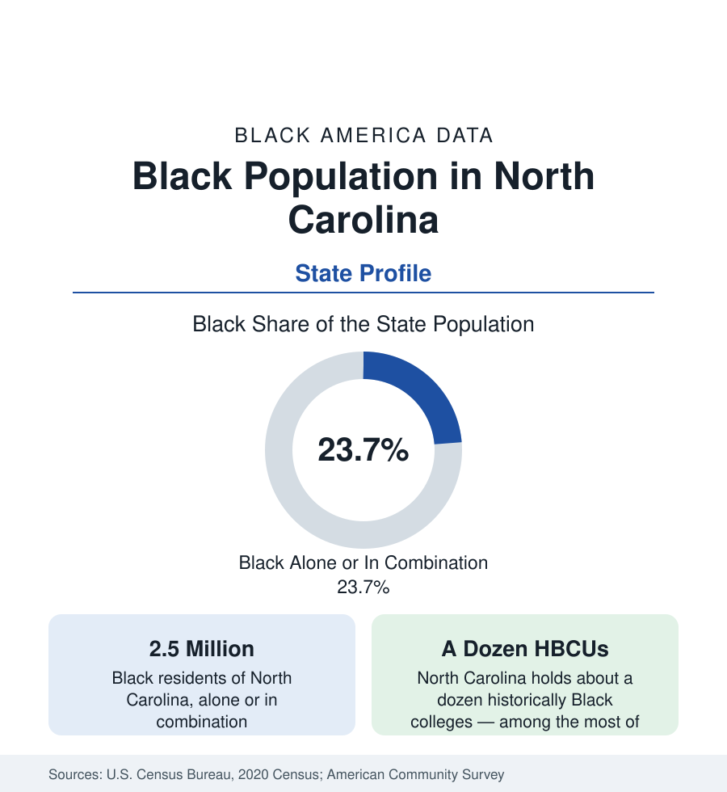

Black Census
Black Population in North Carolina: One in Four, Still Growing
About 2.5 million Black North Carolinians — just under one in four residents — anchor Charlotte, the Triad, and the Research Triangle. The census profile of a growth state.

North Carolina holds about 2.5 million Black residents — Black alone or in combination — just under one in four of its people, with Black alone at about 2.2 million, or 21 percent. It is the growth-state profile of this series at full strength: a large, old Black population rooted in the plantation east and the industrial Piedmont, now joined by one of the strongest streams of the Black return migration, to Charlotte and the Research Triangle above all. This article profiles the population in the census data.
Three Regions, Three Black Carolinas
The state's Black geography follows its famous three-part division. In the east — the Coastal Plain, the historic tobacco and cotton belt — Black population shares are the state's highest: the counties of the northeast, the old plantation region, include several with Black pluralities or majorities, and cities such as Greenville, Rocky Mount, and Fayetteville (the last shaped by Fort Liberty's military economy) hold large Black populations. In the Piedmont center, the industrial cities of the Triad — Greensboro, Winston-Salem, High Point — and the Charlotte and Raleigh-Durham metros hold the growth: Charlotte's Black population runs at about a third of the city, Durham's above a third, and both metros rank among the top destinations in the national Black migration data. In the mountain west, shares fall to the state's lowest, though Asheville and its surroundings hold small, old Black communities of their own.
The HBCU State
North Carolina's institutional distinction is higher education: the state holds about a dozen historically Black colleges and universities, among the most of any state. North Carolina A&T State University in Greensboro is the largest HBCU in the nation by enrollment and its most productive engineering school for Black graduates; North Carolina Central in Durham, Winston-Salem State, Fayetteville State, and Elizabeth City State anchor the public system, while Shaw University in Raleigh (the first HBCU founded in the South), Johnson C. Smith in Charlotte, Livingstone, Bennett College for women, and St. Augustine's carry the private tradition. The enrollment and attainment data of this reference's education section reflect the pipeline: North Carolina's Black college-going and degree figures are carried substantially by institutions founded for the purpose in the nineteenth century.
Growth: The Return Migration's Second Capital
After Georgia, no state gains more from Black America's southward redistribution. The migration data show Charlotte and Raleigh-Durham receiving Black households from New York, New Jersey, the Midwest, and California at rates that place both metros in the top tier of destinations, and the state's Black population growth in recent cycles outruns the Southern average. The newcomers arrive, per the survey profile, disproportionately credentialed and bound for the banking, technology, and health sectors of the two metros — the selective pattern documented throughout this section — while the eastern counties continue to record the slower growth and older age structure of the rural Black South. Statewide averages, again, blend two demographic regimes moving in different directions.
Composition
Black North Carolinians record attainment and income figures above the Southern Black average and near the national one, lifted by the metro weight of the distribution. The state holds a small but growing foreign-born Black population in Charlotte and the Triangle. Its age structure is favorable — younger than the state's overall population, on the strength of both the university pipeline and the working-age migration. Politically and culturally, the Black population's weight — one resident in four — makes North Carolina the most evenly contested of the large Black states in the demographic data, a fact registered in every dataset this reference publishes at the state level.
Reading the North Carolina Numbers
North Carolina's profile is the series' argument for reading growth and rootedness together. The state is simultaneously a place Black families have inhabited since the colonial era — its eastern counties hold some of the oldest continuous Black communities in the South — and one of the two or three states where Black America's future geography is being written fastest. The figures in the county tables beneath this profile hold both truths at the resolution where they can be used.
The profiles of Charlotte and Raleigh-Durham in the cities section take the two growth metros in detail.
More in Black Census
The Black Population of the United States: Size, Definitions, and Distribution
The Black population of the United States totals 52.8 million — 15.4 percent of the nation. How the Census Bureau defines and counts the population, and where it lives.
Black Median Household Income in the United States
Black median household income stands at $56,490 in the Census Bureau's annual income report — how the figure is measured, how it compares, and what drives it.
The Black Poverty Rate: Levels, Children, and the Long Trend
The official Black poverty rate is 17.1 percent — against 11.1 percent nationally and 7.7 percent for non-Hispanic White Americans. How poverty is measured and what the data show.
Source: U.S. Census Bureau, 2020 Census; American Community Survey; Population Estimates Program.